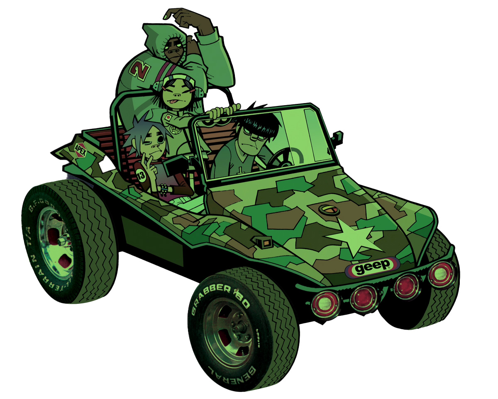
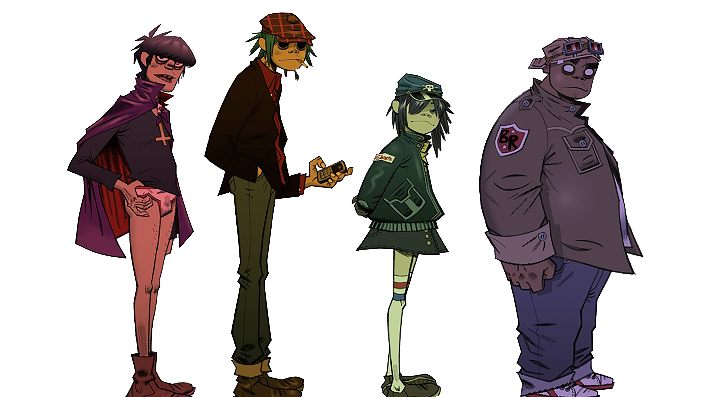
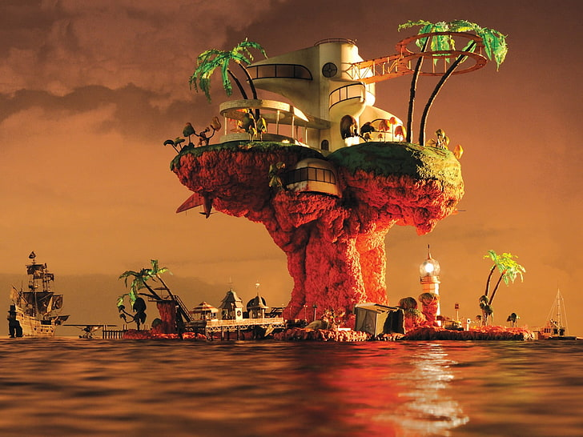
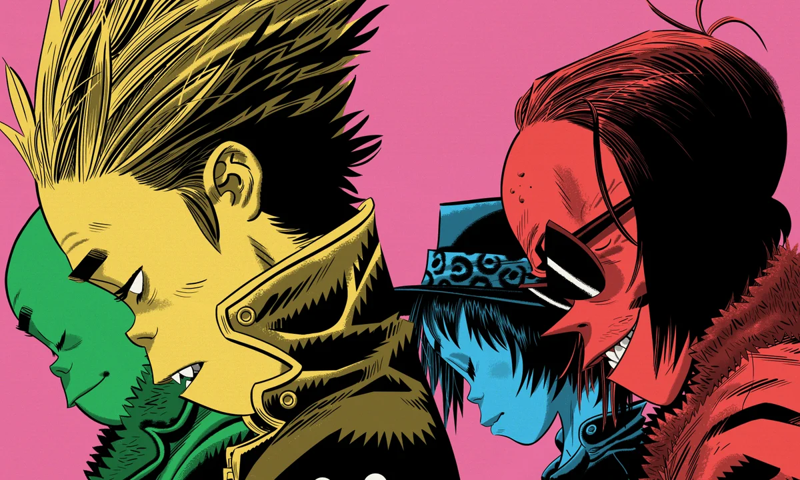
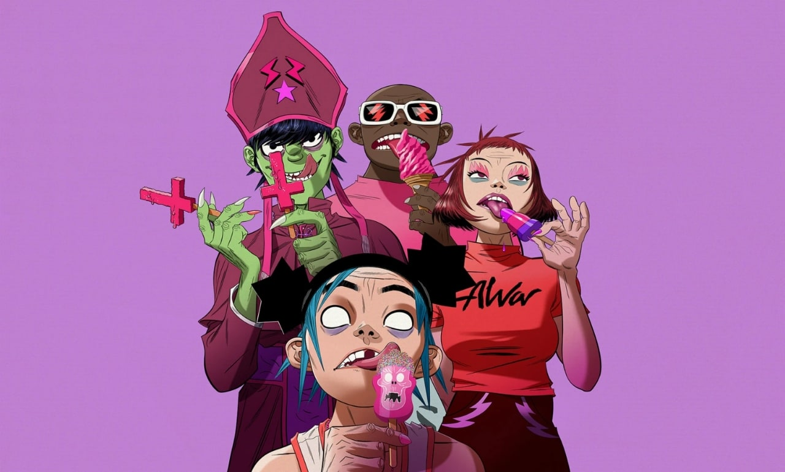

Las Fases de Gorillaz
Cada “fase” representa un cambio de escenario forzado. Han tenido que huir de sus hogares,
destrozar estudios y ser perseguidos a través de los continentes. La música es el testimonio
sonoro de cada desastre vivido.
Fase 1 — Gorillaz (2001)
La primera fase marca el nacimiento de la banda virtual. Con su disco debut *Gorillaz*,
lanzado en 2001, irrumpieron en la escena con un sonido experimental que combinaba hip hop,
dub, electrónica y rock alternativo.
Su estética animada y su universo ficticio llamaron la atención del mundo entero.
Canciones como *Clint Eastwood* y *19-2000* se convirtieron en clásicos inmediatos.

Fase 2 — Demon Days (2005)
En esta etapa, Gorillaz evolucionó hacia un sonido más oscuro y temático.
El álbum *Demon Days* reflejó preocupaciones sociales y políticas, abordando temas como la
contaminación, la guerra y el aislamiento.
Su estética visual se volvió más cinematográfica y apocalíptica.
Entre sus éxitos se destacan *Feel Good Inc.*, *Dirty Harry* y *DARE*, que definieron la identidad
visual y sonora de la banda.

Fase 3 — Plastic Beach (2010)
Con *Plastic Beach*, la banda abrazó la crítica ambiental y el concepto de un futuro contaminado.
La isla de plástico donde viven los personajes simboliza el exceso y la artificialidad de la cultura moderna.
Este álbum reunió a una lista impresionante de colaboradores, desde Snoop Dogg hasta Lou Reed,
combinando sonidos orquestales, electrónicos y pop futurista.
Visualmente, fue la fase más ambiciosa del grupo hasta ese momento.

Fase 4 — Humanz (2017) y The Now Now (2018)
Después de un largo silencio, Gorillaz regresó con *Humanz*, un álbum que celebraba la diversidad
y el caos del siglo XXI. Su continuación, *The Now Now*, presentó un tono más introspectivo,
centrado en la voz de 2D y en una atmósfera más íntima y electrónica.

Fase 5 — Song Machine (2020) y Cracker Island (2023)
En la actualidad, Gorillaz sigue explorando nuevos formatos.
*Song Machine* fue lanzado como una serie audiovisual con capítulos mensuales,
y *Cracker Island* consolidó su madurez musical con un mensaje más luminoso pero igual de reflexivo.
La banda virtual se mantiene vigente y sigue reinventando su propio universo.
